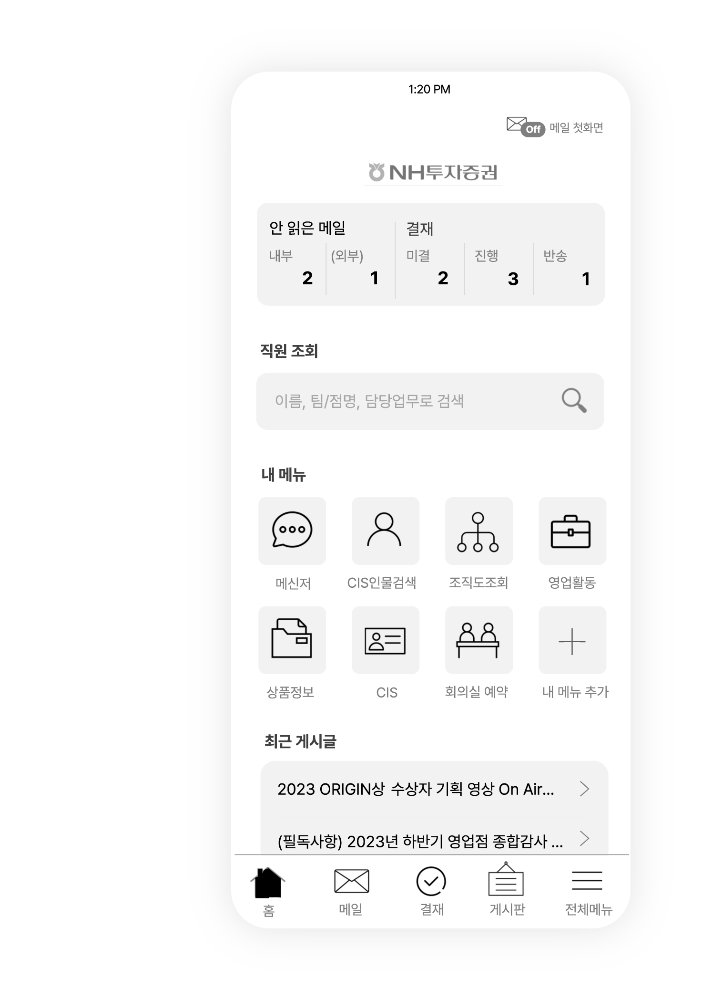

Main
보다 집중도 있고, 빠르게
하단 Navigation을 두어 주요 메뉴별 빠른 이동이 가능합니다.
공통적인 Key Information(메일과 결재)을 상단에 배치하고,
개별적으로 자주 사용하는 메뉴를 즐겨찾기 형태로 커스터마이징
개인의 업무를 최적화하도록 돕습니다.

NH투자증권의 UX를 기획하였습니다.
그룹웨어 UX의 트렌드와 해결해야 할 과제를 중심으로 업그레이드된 모바일 업무 환경을 제공했습니다.
NH투자증권 모바일 오피스는 2014년, 다양한 기능과 콘텐츠를 담아 시작되었습니다.
계속하여 추가된 화면들을 아우르는 디자인 통합과 업그레이드가 필요합니다.
또한 지금 시점의 모바일 유저의 사용성을 고려한 UX 업그레이드가 필요합니다.
모바일 그룹웨어 UX는 포털 형태의 많은 기능과 정보를 한번에 담는 모습에서,
개인의 업무 효율을 위한 심플한 구성으로 변화하고 있습니다.
그룹웨어 초기, 최대한 많은 기능과 콘텐츠를
메인화면에 제공. 기업포털의 느낌을 강조.
모바일 초기 사이트 메뉴와 Microsoft의 Metro UI의 영향
사용경험이 쌓이며, 많은 정보와 기능의 나열보다 빠르게 접근하는 UI를 선호. (타사스템 사용자 조사 결과)
심플한 구글과 네이버 UI의 영향으로 간결한 화면을 선호하게 됨
주요 화면을 하단 Navigation으로 접근하고, 홈/소식 메뉴를 추가할 수 있는 개인화 적용.
요소에 콘터라스트를 제거
잘못 선택하는 방해 요소 제거
요소에 콘터라스트를 제거
전체 나열이 아닌 핵심 우선 제공
하단 Navigation을 두어 주요 메뉴별 빠른 이동이 가능합니다.
공통적인 Key Information(메일과 결재)을 상단에 배치하고,
개별적으로 자주 사용하는 메뉴를 즐겨찾기 형태로 커스터마이징
개인의 업무를 최적화하도록 돕습니다.


스크롤을 없애 메뉴 인지를 도움.
고정된 레이아웃. 직관한 크기로 메뉴 표시
12개 이상의 메뉴가 있을 경우 다음 버튼으로 이동 가능
버거컨셉 다양한 레이아웃은 다시 사선의 분선이 발생하므로 제외
담은 메뉴와 결제 금액 을 나누어 정보를 구분